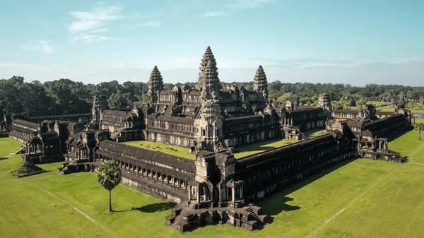
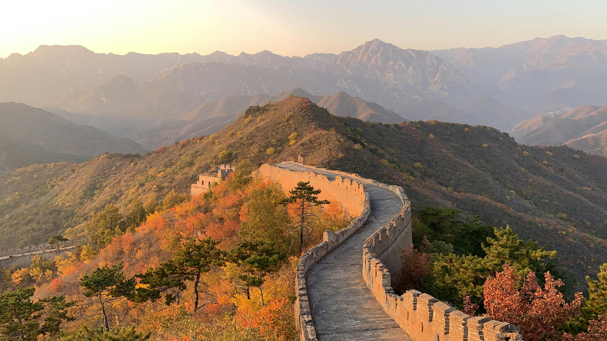

Angkor Wat, Cambodia
In the 12th century, the Khmer kings of Cambodia packed the equivalent of all of Europes great cathedrals into an area the size of Los Angeles. Almost a millennium later, the fabled Temples of Angkor are a bucket-list destination for history enthusiasts and for anyone who wants to be dazzled by human achievement. Indeed, the temple complex, a UNESCO World Heritage site, is an essential stop for many travelers to Southeast Asia. And the star of the site is Angkor Wat the ultimate statement of Khmer architectural ingenuity, a perfect blend of religious symbolism and symmetry, and the largest religious building in the world. The temple remains a source of fierce national pride in Cambodia: the structure is the only building to be featured on a national flag. Since almost every inch of this immense complex is covered with intricate carvings and motifs, theres a huge amount to see and interpret. Which means it pays to do a little homework on this most iconic of temples before setting out.
more information about Angkor Wat, Cambodia
Great Wall, China
A border defense system garrisoned by hundreds of thousands of soldiers at various times in the nation's turbulent history, the Great Wall today is a UNESCO World Heritage site and is in a state of picturesque yet precarious ruin, a fading relic with only a tiny fraction of its total length restored and open to tourists. This is everything you need to know about about making a trip to the Great Wall of China.
more information about Great Wall, China
Disneyland, Japan
Tokyo Disneyland, located in Urayasu near Tokyo, is a premier theme park open year-round, featuring seven themed lands, including World Bazaar and Toontown. As the first Disney park built outside the US, it offers unique attractions and top-tier hospitality. Tickets range from JPY 7,900–9,400 for adults, with easy access via JR Maihama Station.
more information about Disneyland, Japan